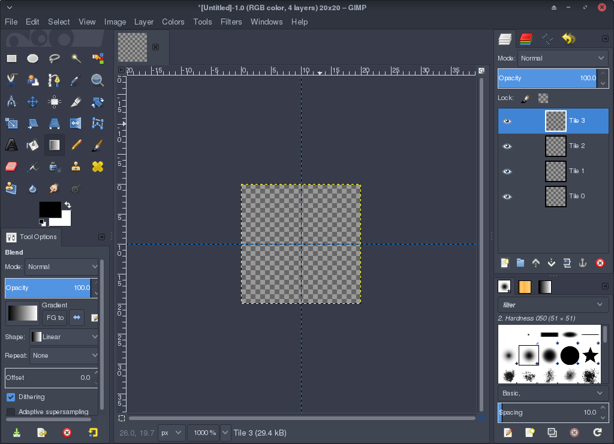
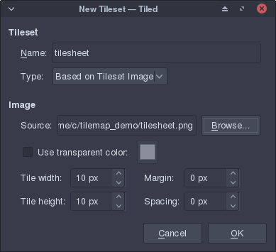
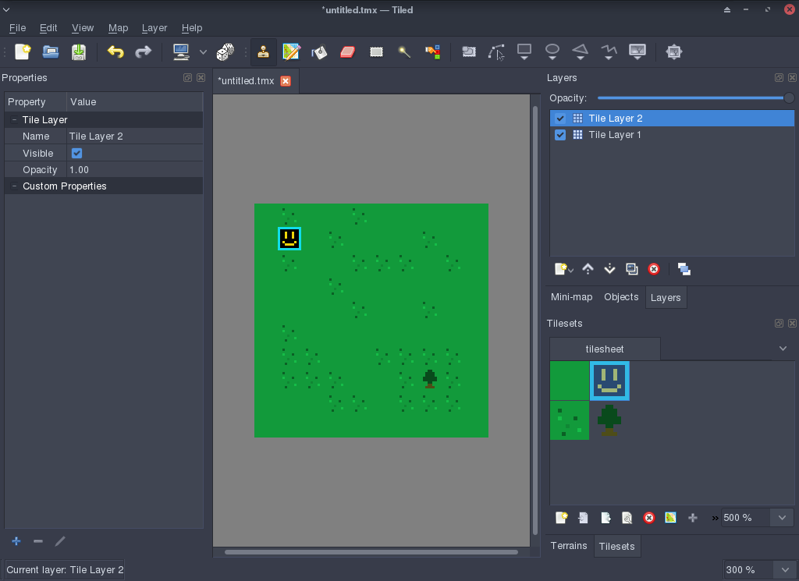

Creating a tilesheet and a map¶
In this short tutorial, we’ll go over how to create a simple tilesheet, and use the Tiled editor to create a tilemap.
Creating a tilesheet¶
A tilesheet is an image made up of smaller images that represents a tile. A simple tilesheet, with 10x10 pixel tiles, would look like this:

Tiles are indexed from zero in Sappho, and indexing goes right then down. Let’s look at an annotated and enlarged version of the above tilesheet:

To start creating a tilesheet, you need to decide on a couple of things:
- The size of the tiles. All tiles in the tilesheet will share the same size, but if you run out of room, you can always make one thing span multiple tiles (you’d just have to arrange them right when it comes to creating your map)
- How many tiles you need in your tilesheet. You can always resize it later, but it’s a good idea to keep the width of the tilesheet the same, so you don’t throw out your tile indexing (remember, right then down). If you resize your tilesheet to add more tiles at the bottom, all the tiles above the resize will keep the same tile ID.
Let’s create a simple 4-tile tilesheet. We’ll make each tile 10x10 pixels, which means we’ll have a 20x20 tilesheet image.
Create a new image in your favorite image editing program (for the sake of the tutorial, we’ll use GIMP) and set the size to 20x20 pixels.
Once the image is created, delete the background layer and create four new layers, named Tile 0 through to Tile 3. Then, add guides at the boundary of the tiles, by dragging down from the ruler at the top and left, and place the guides at 10 pixels in from those sides. This will give us our 2x2 tile grid to work with.
Once that’s done, you should have an environment that looks like this:
Let’s start creating our tiles.
First, let’s create a grass tile, which will act as the background of our map. Select the Tile 0 layer, and fill the top-left square with green, by selecting the Rectangle Select Tool in GIMP. This is in your tool palette on the left of the screen, and should be the first icon. Drag from the top-left corner down to the center of the image, meeting the guides. Then select the bucket fill tool (which looks like a paint bucket), select a green color by clicking on the black square below the tool palette and choosing a color in the dialog that pops up, click OK, and click on the selected square.
That’s our first tile done! Now let’s create a few more. For the next tile, let’s create a black square with a blue border. Later on, we’ll make this block solid, so the player can’t walk through it. Switch to the Tile 1 layer, select the whole square and fill it with blue. Then, select the square again, but one pixel in from the edge on all sides, and fill that with black. You should now have a tilesheet that looks like this: (I took some liberties and added a smiley face)

It’s up to you what to do with the other two tiles, but for the sake of the tutorial, I’ll add another grass tile with some texture, and a tree.

Save this as tilesheet.png in a new folder.
Tilesheet rules¶
Now, we have to create the rules file for our tilesheet.
Tilesheet rule files take a simple format. Each line consists of a tile ID, followed by an equals sign, then any flags that the given tile has.
The only flag that is currently implemented is solid_block. This
means that the tile can not be walked through by the player. We’ll
set this flag on our box tile and our tree tile in this example, but
if you had something else on your mind for the other two tiles in the
previous section, this may differ.
The tilesheet rules file name is simply the name of your tilesheet image file, with ”.rules” appended. Let’s create the rules file for our example tilesheet:
1=solid_block
3=solid_block
Easy! Save it as “tilesheet.png.rules” in the same folder as your tilesheet image.
Creating a tilemap¶
To get started creating a map, you’ll need to install the Tiled map editor. Once you have it installed, start it up and create a new map. You’ll need to double check the map settings before continuing though - they should look like this:

You can set the map size to whatever you want, but make sure the tile size is set to the same size as your tiles in the tilesheet (in the example, 10x10 pixels). Click OK, and you’ll be presented with a blank editor canvas.
The first step is to add the tilesheet you created to the map. To do this, under the Tilesets heading on the bottom right, click the New icon.
In the dialog that comes up, click Browse, and find your tilesheet. The window should now look like this:
Click OK, and your tilesheet should now appear in the Tilesets section of the editor window. Because we’re working with very small tiles, you may want to zoom in, which you can do by adjusting the percentage displayed below the tilesets section. There should be another percentage below this, and that is the zoom level for the editor, which you probably want to adjust as well, so you can see what you’re working with.
Click on your grass tile in the tilesets section, and it will appear highlighted. This means that it’s selected, and you can now place it on the map! Let’s fill our map with grass tiles to start. Select the bucket fill tool from the top of the window, and click in the center of the editor screen. You should now see a green square in the center. Congratulations! That’s the first step towards creating a map.
Before we can place other objects around, like our solid block (or the tree I created), we need to create a new map layer. This means that the grass blocks are still in the background, and whatever we place on the new layer will sit above the grass. This is particularly important for the tree that I created in my example - it’s background is transparent, meaning that if I place it instead of a grass block, just black will appear in the background.
Creating a new layer is easy, though - just click the New button in the Layers section (above the tileset section), and click Add Tile Layer. Now that we have created the layer for our objects, let’s place them.
Since we selected the bucket fill tool earlier to fill our map with grass, we have to switch back to the Stamp Brush tool by clicking it at the top of the window. Then, click on a tile in our tilesheet, and click anywhere on the map to place it.
You should now have a screen that looks something like this:
Now, save the tilemap in the same directory as your tilesheet, naming it “tilemap.tmx” (”.tmx” is the file extension for Tiled maps).
Congratulations! You’ve successfully created a tilesheet and a map that uses it. Take a moment to marvel in your creation, you deserve it.